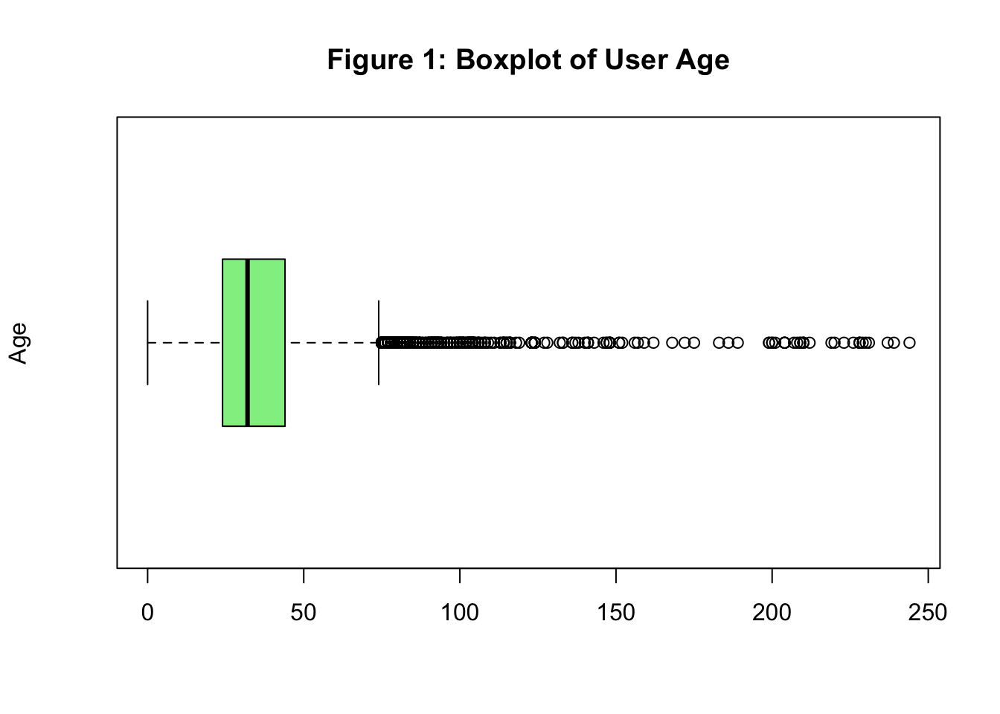
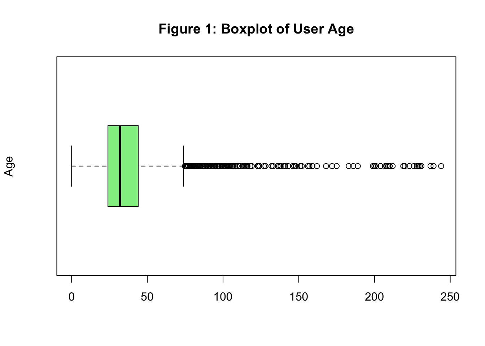
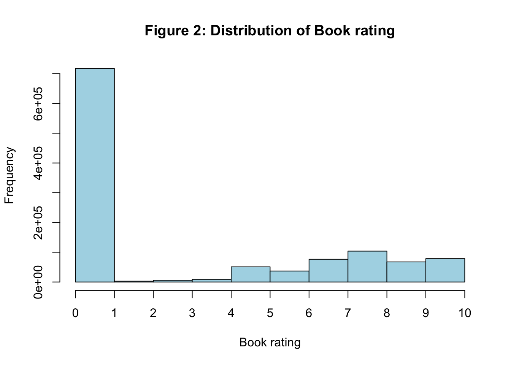

[1] 0[1] 34.75143[1] 32[1] 244
This report’s repository can be viewed on my GitHub profile.
I know that plagiarism is wrong.
Plagiarism is to use another’s work and pretend that it is one’s own.
I have used the required convention for citation and referencing.
Each contribution to and quotation in this assignment from the work(s) of other people has been attributed, and has been cited and referenced.
This assignment is my own work.
I have not allowed, and will not allow, anyone to copy my work with the intention of passing it off as his or her own work.
I acknowledge that copying someone else’s assignment or essay, or part of it, is wrong, and declare that this is my own work.
The objectives of this report were as follows:
1. Build recommender systems that predict the rating a user will give to a book based on each of:
a) item-based collaborative filtering,
b) user-based collaborative filtering, and
c) matrix factorisation.
2. Assessment and ensemble model:
a) Assess the accuracy of the matrix factorisation recommender system, using a single train/test sample.
b) Assess the accuracy of the matrix factorisation recommender system with and without regularisation.
c) Create a final model that ensembles the predictions from the three approaches, and then assess the accuracy of the ensemble predictions.
Recommender systems utilise data mining techniques to offer personalised suggestions by analysing patterns in user preferences and behaviours (Data Mining: Concepts and Techniques, 2012). The collaborative filtering approach specifically focuses on identifying users with similar tastes or preferences, recommending items based on the opinions and actions of those with shared interests. This method may also take into account a user’s social environment to enhance the relevance of the recommendations.
Cosine similarity is a metric used in both user-based and item-based collaborative filtering to measure how similar two vectors are.
Given two vectors, \(\boldsymbol x\) and \(\boldsymbol y\), the cosine similarity is defined as:
\[cos(\theta) = \frac{\boldsymbol x \cdot \boldsymbol y}{||\boldsymbol x|| \ ||\boldsymbol y||} = \frac{\sum_{i=1}^{n}x_iy_i}{\sqrt{\sum_{i=1}^{n}x^2_i} \sqrt{\sum_{i=1}^{n}y^2_i}}\]
Cosine similarity ranges from 0 to 1, with higher values indicating greater similarity. As two vectors become more aligned, the angle between them decreases, and the cosine similarity approaches 1, reflecting highly similar user preferences. Conversely, a larger angle results in a cosine similarity closer to 0, indicating that the preferences are very different.
User-Based Collaborative Filtering accounts for a user’s interests by identifying similar users and recommending items that those users have shown interest in (Grus, 2015).
To get an idea of how similar two users are we need to use the cosine similarity metric, which quantifies how alike any two users are based on their preference vectors.
Item-based collaborative filtering (IBCF) takes an alternative approach by computing similarities between items, rather than users. Recommendations are then generated for each user by aggregating items that are similar to the ones the user has shown interest in (Grus, 2015).
Cosine similarity is again used to calculate similarity. If two items are of interest to the same users, their similarity will be closer to 1. If no users show interest in both items, their similarity will be closer to 0. Recommendations are generated by summing the similarities of items related to the user’s current interests.
Matrix factorisation offers a different approach to collaborative filtering, rooted in linear algebra, where the goal is to fill in missing values within a matrix. Also known as matrix decomposition, it involves representing a matrix as the product of two smaller matrices. The key concept behind this method is the discovery of latent factors — hidden features that capture meaningful patterns in the data.
In recommendation systems, matrix factorisation decomposes the user-item ratings matrix into two smaller matrices in such a way that the known ratings are closely approximated. A key advantage of this approach is that, while the original ratings matrix is incomplete (with missing entries), the decomposed matrices are fully populated. This allows for predicting the missing values in the original matrix, effectively filling in the blanks and making recommendations based on the latent factors derived from the data.
The dataset used in this report was obtained from Kaggle’s freely available Book Recommendation Dataset. The data was collected by Cai-Nicolas Ziegler in a four-week-long crawl between August and September 2004 from the Book-Crossing community with kind permission from Ron Hornbaker, CTO of Humankind Systems. It contains 278 858 users (anonymised, but with demographic information) providing over 1 million ratings (explicit/implicit) about 271 379 books.
The dataset consists of three files:
1. Users: which contains the user information:
User.ID: the unique, anonymised user identifier.
Location: the location of the user (in the format of city, state, country).
Age: the age of the user.
2. Books: which contains the book and content based information (which have been obtained from Amazon Web Services):
ISBN: the unique identifier for each book.
Book.Title: the book title.
Book.Author: the book author (in the case of several authors, only the first is provided).
Year.Of.Publication: the year of publication.
Publisher: the publisher of the book.
Image-URL-S, Image-URL-M, and Image-URL-L: URLs linking to cover images of the books in size small, medium and large, respectively. These URLs point to the Amazon web site.
3. Ratings: which contains the book rating information:
User.ID: the unique user id of the user rating the book.
ISBN: the ISBN (identifier) of the book rated.
Book.Rating: the rating given by the user. These ratings are either explicit (expressed on a scale of 1-10 where higher values indicated higher appreciation), or implicit, expressed by 0.
There were no duplicate entries found in any of the datasets.
The Books dataset contains information for 271 360 books, with all of these books being unique based on their ISBN.
The Users dataset contains information for 278 858 users, with all of these users being unique based on their user IDs.
The Ratings dataset contains information for 1 149 780 ratings. For this dataset we found that 105 283 unique users gave ratings (both explicit and implicit), this accounts for approximately 38% of the total user base. Interestingly, these users rated 340 556 books, which exceeds the number of books listed in the Books dataset.
We decided to investigate the following variables: user age and book ratings.
We chose not to explore user location or additional book details, as they were not relevant to the objectives of this recommender system exercise.
User ages ranged from 0 to 244 years, with a mean of 35 and a median of 32. This range presents significant issues, as it’s unrealistic for users to be 0 or 244 years old. These outliers likely result from data entry errors. Excluding these extreme values reveals that the age distribution is generally symmetrical and uniform.
[1] 0[1] 34.75143[1] 32[1] 244
Book ratings ranged from 0 to 10. A rating of 0 indicated an implicit interaction, meaning the user may have read or interacted with the book but did not explicitly rate it. Ratings from 1 to 10 were explicit, representing direct user input. As shown in Figure 2 below, the majority of ratings were implicit, which will be less useful for our recommender system moving forward.
[1] 0[1] 2.86695[1] 0[1] 10
We observed that one user (ID 11676) rated an impressive 13 607 books, which is significantly higher than the average of just 10 book ratings per user. When we investigated this user we noted that there is no location or age information available for them
The most rated book was “Wild Animus” by Rich Shapero, published in 2004, which received a total of 2502 ratings.
Several books had an average rating of 10, though in many cases these ratings were based on input from only a single user.
We decided to drop the implicit ratings (ratings equal to 0) as these are not useful in the building of our recommender model. We also chose to only keep books with 5 or more ratings to exclude books that are rarely read.
We also chose to retain user ratings only for those who had rated 10 or more books (i.e., users who rated at least the average number of books). This approach ensures that we focus on active readers, providing a more reliable understanding of their preferences. These filtering methods resulted in a ratings data frame with 111 008 rows, meaning 1 038 772 observations (~90% of our ratings data) was dropped.
We decided to only investigate the user preferences of young adults between the ages of 18 and 25 (inclusive). All other ages were dropped from the data frame. We also decided to exclude the user location information as this was not helpful to our recommender model building.
We ensured that all books had a title. We then investigated the instances where the Year of Publication contained non-numeric values, as this would prevent converting the column to an integer. We found that for three books, the Book Author and Year of Publication fields had been mistakenly swapped. To address this, we implemented a solution to correct the swapped information. We then turned the year of publication column into a type integer.
We kept the ISBN, book title, author and year of publication information and dropped the publisher and image URLs from the books data frame.
The Books data frame was merged with the Ratings data frame using a left join on the common variableISBN. This ensured that all the ratings information was retained while adding the corresponding book titles and authors to the data set.
To address the earlier discrepancy where more books were rated than were listed in the Books data frame, we checked for any missing book titles. We found that 7 249 ratings lacked corresponding book titles or any other associated information. As a result, we opted to remove these ratings from the data frame.
We then merged the user information into the new data frame using a left join, matching on the shared user IDs. The left join was chosen to ensure that all data related to the books and their ratings remained intact. We then noted that we now had 97 202 ratings without age information which had to be dropped.
The final merged data frame contained the following variables: the book’s ISBN, title, author, year of publication, the user’s rating, and their age. It comprised 10 768 ratings, and the first 50 can be viewed by exploring the data table below.
Matrix factorisation was implemented using the recosystem package. To prepare the data in the required format, we structured the ratings dataset so that each row represented a unique rating, with columns for the user ID, book ISBN, book title, and rating score. It was necessary to convert both the user IDs and book ISBNs into factors, as the matrix factorisation model in recosystem relies on categorical encoding of users and items. This step ensured that the model could properly identify and differentiate between users and books.
After preparing the data, we initialised a matrix factorisation model using the recosystem package by creating an instance of the Reco() object. This object serves as the model that will be trained on our data to learn user-item interactions.
Next, we split the data into training and test sets to evaluate the model’s performance. We used an 80/20 split, where 80% of the data was randomly selected for training and the remaining 20% was used for testing. To ensure reproducibility (so that the same random split can be generated each time the code is run), we set a random seed.
To use the recosystem package for matrix factorisation, we need to convert the training and testing data into a format that the package can process. This is done by using the data_memory() function, which transforms the data into memory-efficient objects that recosystem can work with.
For the training data:
We specify the user_index (the user ID), item_index (the ISBN for each book), and the rating (the actual rating given by the user).
This creates a memory-based data object that links users, books, and ratings, which will be used to train the model.
For the testing data:
user_index and item_index are specified along with the rating, allowing us to evaluate the model’s performance on unseen data.We then performed collaborative filtering with matrix factorisation both with and without a regularisation term.
The matrix factorisation model is trained on the training set using the train() function from the recosystem package. Without specifying a regularisation term, the model relies purely on learning latent factors for users and items without penalising large or complex factor values. This can lead to overfitting, especially with sparse data, because the model may fit the training data too closely, capturing noise rather than generalisable patterns.
After the training phase, predictions were made on the test set using the predict() function. The predicted ratings were stored for later evaluation. Since there was no regularisation, the model might perform well on the training set but could struggle to generalise to new, unseen data in the test set, potentially leading to poorer predictive accuracy.
To enhance the performance of matrix factorisation in collaborative filtering, we introduced L2 regularisation. L2 regularisation adds a penalty term to the loss function, discouraging large parameter values. This helps prevent overfitting, especially in sparse datasets, which is common in recommendation systems. In the recosystem package, L2 regularisation is applied to both user and item latent factors by setting costp_l2 and costq_l2 during model training. These parameters control the strength of regularisation for the user and item factors, respectively.
We conducted a grid search to find the optimal combination of costp_l2 and costq_l2 values that would yield the lowest RMSE score for our predictions.
The following values were tested:
costp_l2: 0.001, 0.01, 0.1, 0.5, 0.6, 0.8, 1
costq_l2: 0.001, 0.01, 0.1, 0.5, 0.6, 0.8, 1
This approach allowed us to identify the best regularisation settings to improve prediction accuracy and prevent overfitting.
The best combination of hyperparameters were a costp_l2 of 0.5 and a costq_l2 of 0.01, which resulted in a RMSE of ~1.83.
This combination was selected for the final model with L2 regularisation to generate predictions.
To calculate user similarities, we first converted our ratings matrix into a wide format, where each row represented a user (User.ID) and each column represented a book (ISBN).
Recognising that users have different rating habits, with some users rating consistently higher or lower than others, we applied mean-centering to standardise the data. Without this normalisation, users with similar preferences might appear dissimilar due to these differences in rating styles. By using mean-centering, we adjusted the ratings to reflect how much a user liked or disliked a book relative to their own average. This prepared the data for computing the users’ cosine similarity, ensuring that it captured users’ true preferences and enabled more accurate recommendations.
We replaced any NA values, representing missing ratings for a given book, with zero. This step was necessary because cosine similarity cannot handle missing values. The matrix was then converted into a sparse format, which is more computationally efficient when working with matrices that contain a large number of zero values.
Finally, we calculated cosine similarities between users based on their book ratings using the simil() function from the proxyC package, which is well-suited for efficiently handling sparse matrices. The user similarities sparse matrix was converted to a dense matrix, to allow for easy computation and predictions later.
To assess the UB collaborative filtering model’s predictions, we chose to make predictions on the same test set used in the collaborative filtering model with matrix factorisation. We created a function to calculate the user-based predicted rating, while adjusting for each user’s average rating.
In the function, we first retrieve the cosine similarity scores for the target user and standardise them so they sum to one, but only across users who have rated the specific book. The predicted rating for the book is then calculated as a weighted sum of the ratings given by other users, with the weights being the standardised similarity scores. Finally, the predicted rating is adjusted by adding the user’s average rating to bring it back to the original scale.
This approach ensured that both user similarities and individual rating tendencies are considered when making predictions.
We then applied the function across the same test used in the collaborative filtering with matrix factorisation model.
To calculate item similarities, we first converted our ratings matrix into a wide format, where each row represented a book (ISBN) and each column represented a user (User.ID).
Recognising that books may receive different ratings from various users, we applied mean-centering to standardise the data. Without this normalisation, books with similar popularity might appear dissimilar due to differences in user rating styles. By using mean-centering, we adjusted the ratings to reflect how well a book was rated relative to its average rating across users. This prepared the data for computing the items’ cosine similarity, ensuring that it captured each book’s true popularity and enabled more accurate recommendations.
We replaced any NA values, representing missing ratings for a given user, with zero. This step was necessary because cosine similarity cannot handle missing values. The matrix was then converted into a sparse format, which is more computationally efficient when working with matrices that contain a large number of zero values.
Finally, we calculated cosine similarities between books based on their ratings from users using the simil() function from the proxyC package, which is well-suited for efficiently handling sparse matrices. The item similarities sparse matrix was converted to a dense matrix to allow for easier computation and predictions later.
To assess the IB collaborative filtering model’s predictions, we chose to make predictions on the same test set used in the collaborative filtering model with matrix factorisation. We created a function to calculate the user-based predicted rating, while adjusting for each user’s average rating.
In the function, we first retrieve the cosine similarity scores for the target user and standardise them so they sum to one, but only across users who have rated the specific book. The predicted rating for the book is then calculated as a weighted sum of the ratings given by other users, with the weights being the standardised similarity scores. Finally, the predicted rating is adjusted by adding the user’s average rating to bring it back to the original scale.
This approach ensured that both user similarities and individual rating tendencies are considered when making predictions.
We then applied the function across the same test used in the collaborative filtering with matrix factorisation model.
As our last model we built an ensemble model which averages the predictions from the user-based, item-based and the matrix factorisation model (with regularisation) on the condition that the predictions are only considered if they fall within the range of 1 and 10 (inclusive), i.e. the predictions are valid. .
Grus, J. (2015). Data Science from Scratch: First Principles with Python. 1st ed. O’Reilly Media.
Han, J., Kamber, M. & Pei, J. (2012). Data Mining: Concepts and Techniques, Morgan Kaufmann Publishers, San Francisco, CA, USA.